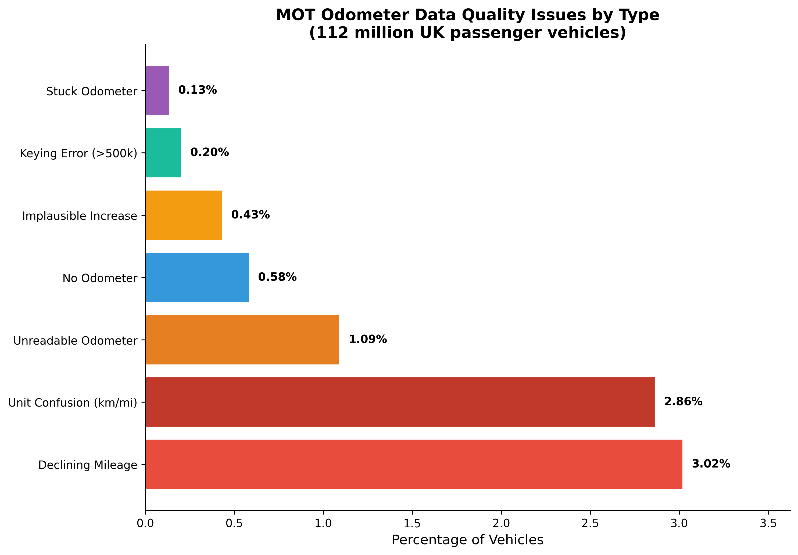
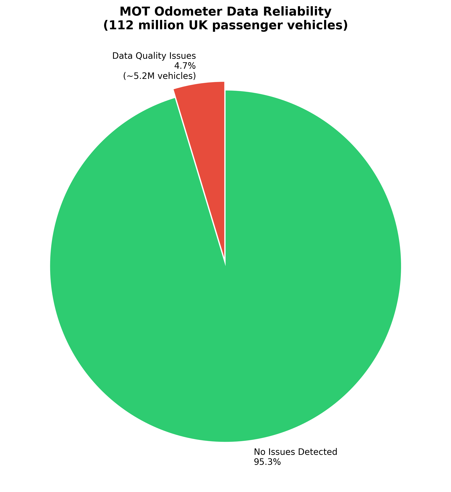
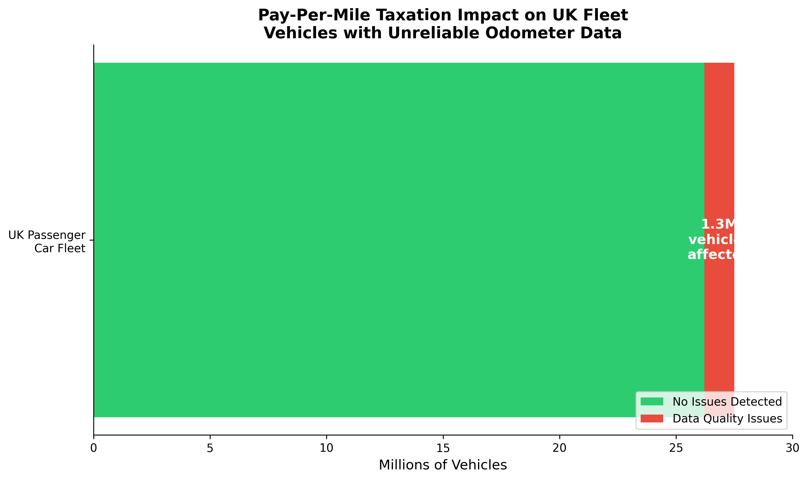
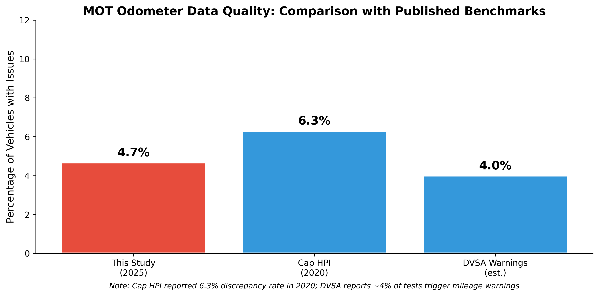
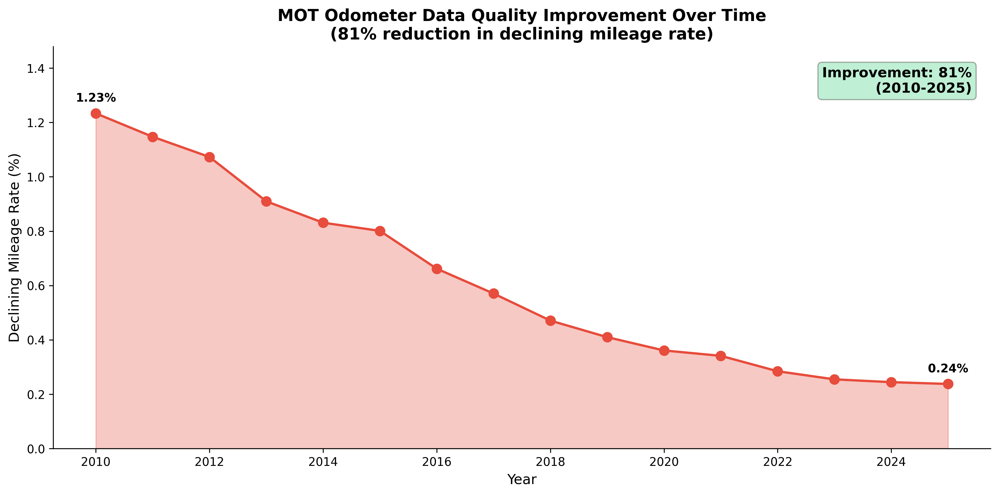
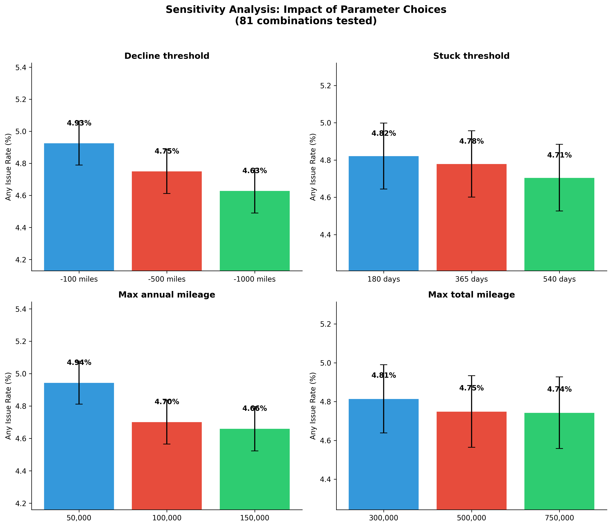

MOT odometer data is unfit for pay-per-mile taxation
Analysis of every MOT test ever recorded in the UK reveals significant data quality issues that would undermine fair road pricing.
The Dataset
This isn't a sample. It's every MOT test ever recorded in the UK.
What We Found
Seven categories of odometer data quality issues, each with different causes and implications.

Fig. 1: Distribution of odometer data quality issues across 112 million passenger vehicles

Fig. 2: Overall data reliability — 95.3% of vehicles have no detectable issues

Fig. 3: Estimated fleet impact — affected vehicles as proportion of the 27.5M UK passenger car fleet
Consistent with Government Data
Our findings closely align with published statistics from DVSA and industry.

Our findings sit between DVSA's warning trigger rate and Cap HPI's broader discrepancy measure
The good news: data quality is improving rapidly
The rate of declining mileage readings has fallen from 1.23% in 2010 to just 0.24% in 2025. This 80% improvement demonstrates that system improvements are working.
DVSA's automated warning systems, introduced in recent years, appear to be having a significant effect on recording accuracy.

Declining mileage rate by year, showing consistent improvement
No Country Uses MOT Data for Taxation
Every jurisdiction that has attempted mileage-based taxation uses purpose-built systems, not annual inspection readings.
Netherlands
Considered km-based tax, then abandoned. Would have required on-board units, not inspection data.
Did not use MOT data
New Zealand
Road user charges for diesel vehicles. Uses tamper-evident hubodometers — dedicated hardware.
Did not use WOF data
Oregon, USA
Voluntary OReGO program. Uses GPS tracking or verified odometer photographs.
Did not use inspection data
No comparable jurisdiction uses annual vehicle inspection readings for road taxation.
The Regulatory Gap
Odometers were designed for drivers, not tax collectors. The legal framework reflects this.
No maintenance requirement
UN Regulation 39 mandates odometers at manufacture, but UK Construction & Use Regulations do not require them to remain functional. A broken odometer is not an MOT failure.
Three-year blind spot
First MOT at age 3 establishes the baseline. Mileage "corrected" before the first MOT is invisible to any subsequent analysis.
Mileage blockers openly sold
Devices that reduce or stop mileage recording are sold legally in the UK. Unlike crude rollback, blocking leaves no trace in vehicle ECU memory.
±4% accuracy tolerance
Odometers are permitted ±4% error at type approval with no ongoing calibration. Over a vehicle's lifetime, this compounds to thousands of miles of drift.
What Would This Mean in Practice?
Explore the potential tax impact of odometer data errors under a hypothetical pay-per-mile scheme.
Options for Government
We don't argue against pay-per-mile in principle — only against using unsuitable data.
Results are robust across all parameter choices
We tested 81 parameter combinations varying decline thresholds, stuck-odometer windows, and implausibility limits.
The "any issue" rate ranged from 4.43% to 5.19% across all combinations, confirming the 4.7% finding is not sensitive to methodology choices.
| Parameter | Tested Range |
|---|---|
| Decline threshold | -100 to -1,000 miles |
| Stuck threshold | 6 to 18 months |
| Max annual mileage | 50k to 150k miles/year |
| Max total mileage | 300k to 750k miles |

Sensitivity analysis across 81 parameter combinations (3×3×3×3 grid)
Addressing the Objections
We anticipated the most likely criticisms and addressed them in the research.
Our thresholds are deliberately conservative: 500-mile decline tolerance (not 100), 12-month stuck window (not 6), 100,000 miles/year maximum (not 50,000). The government's own data (Cap HPI 6.3%, DVSA ~4%) shows similar or higher rates. If anything, we understate the problem. Sensitivity analysis across 81 parameter combinations confirms the rate at 4.43%–5.19%.
We explicitly acknowledge this. Odometer replacement and imported vehicles are legitimate. But legitimate or not, these vehicles cannot be fairly taxed using MOT data. The distinction between “error” and “legitimate anomaly” is irrelevant for taxation purposes — the dispute burden is the same.
This is not a sample. We analysed the complete DVSA database: every MOT test ever recorded for every passenger car in the UK. 760 million tests, 112 million vehicles. This is census data, not a sample. The 95% confidence interval is 4.66%–4.67%.
No comparable country uses MOT-equivalent readings for taxation. The Netherlands considered it then abandoned the idea. New Zealand uses tamper-evident hubodometers. Oregon uses GPS or verified photographs. Every jurisdiction that has attempted mileage-based taxation uses purpose-built measurement systems.
HMRC self-assessment has ~3% errors, but taxpayers can verify and dispute with records. MOT odometer taxation offers no independent verification mechanism. The 5% is only detectable issues — the remaining 95% aren't "verified correct," they're "not detectably wrong." And the errors are large: unit confusion alone creates a ~60% discrepancy, worth £600–1,500+ per vehicle.
We agree, and we don't argue that pay-per-mile is impossible. We argue that current MOT data is unsuitable. Improvements (mandatory photo capture, real-time verification, tamper detection, OBD port reading) each require significant investment, regulatory changes, and equipment upgrades. Our recommendation is Option B: improve the data quality first, then proceed.
Methodology
Transparent, reproducible, and deliberately conservative.
Complete Census Data
Full DVSA bulk download via official API. No sampling — this is every MOT test ever recorded for 112 million passenger cars.
Vehicle Classification
Three-tier make/model filtering to exclude motorcycles, vans, and commercial vehicles. >99% classification accuracy.
Sequential Analysis
Chronologically ordered readings compared for each vehicle. Same-day retests filtered to avoid false positives.
Conservative Thresholds
All detection thresholds set conservatively: 500-mile decline tolerance, 12-month stuck window, 100k miles/year maximum.
Statistical Rigour
Wilson score confidence intervals. Full population analysis. Results validated against DVSA's own 4% warning rate.
Sensitivity Testing
81-parameter grid confirms findings are robust. Issue rate ranges from 4.43% to 5.19% across all combinations.
The Academic Paper
Full peer-reviewed analysis with complete methodology, results, and discussion.
Anonymous (2025). "Unfit for Purpose: MOT Odometer Data and the Pay-Per-Mile Problem." Independent research. Available at: https://citi94.github.io/odometer-analysis/
Independent. Transparent. Reproducible.
All code, data processing scripts, and methodology are open source and available for independent verification and scrutiny.